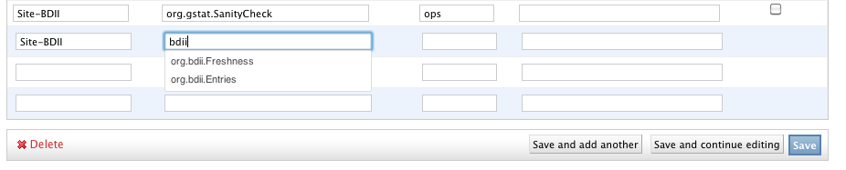

Introduction
Profile Management (POEM) system provides an interfaces and functionality necessary to group different metrics into profiles and based on those profiles configure NAGIOS and all other SAM components. POEM is distributed and various different instances are distinguished with the concept of namespaces. Namespace can be any string uniquely identifying the set of profiles, which you would like to introduce into the system (e.g. ch.cern.sam is used on the central SAM instance). POEM is hosted together with all the other SAM software in all existing nodetypes and their configurations (except for Site-Nagios).
Installation
POEM is part of the existing SAM installation and doesn't need any additional steps to be installed. Additional configuration steps might be necessary and are described in the Transition section below.
Transition from MDDB to POEM
NGI-Nagios
Transition from MDDB to POEM is performed automatically during the glite-yaim configuration. This includes backup of the databases, changes to schemas and migration of the existing data to the new system. In case you would like to setup your own namespace please follow custom configuration of NGI-Nagios.
VO-Nagios
Additional steps are necessary to move VO-Nagios installation to POEM as current model of centralized profiles will no longer work. VO-Nagios is designed to be a completely independent from any central SAM instances and therefore needs to establish a namespace with a set of profiles supporting particular VO. Please follow VO-Nagios.
Experiments
Transition from MDDB to POEM is performed automatically and the central POEM namespace will contain all the profiles (http://grid-monitoring.cern.ch/poem/admin). Please request authorization to add/modify profiles via SNOW (please note that full access to given profile can be only granted to one particular DN). For any newly created profile you need to request (via SNOW) registration of particular ACE algorithm for this profile before availability for it starts to be computed.
Site-Nagios
POEM is currently not supported on the Site-Nagios instances.
Existing profiles
| Profile | Description |
|---|---|
| ch.cern.sam-WLCG_CREAM_LCGCE_CRITICAL | Contains critical OSG and EGI metrics, used to generate Tier1, Tier2 WLCG reports (OPS) |
| ch.cern.sam-ROC_CRITICAL | Contains critical EGI metrics, used to generate EGI league report |
| ch.cern.sam-ROC | Contains all existing EGI metrics |
| ch.cern.sam-ROC_OPERATORS | Contains all EGI metrics shown in the Operations dashboard (CIC) |
| ch.cern.sam-ATLAS_CRITICAL | Contains critical ATLAS metrics, used to generate WLCG_Tier1_VO_ATLAS report (ATLAS) |
| ch.cern.sam-ALICE_CRITICAL | Contains critical ALICE metrics, used to generate WLCG_Tier1_VO_ALICE report (ALICE) |
| ch.cern.sam-CMS_CRITICAL | Contains critical CMS metrics, used to generate WLCG_Tier1_VO_CMS report (CMS) |
| ch.cern.sam-LHCb_CRITICAL | Contains critical LHCb metrics, used to generate WLCG_Tier1_VO_LHCb report (LHCb) |
Configuration
POEM is shipped with default configuration that should work for all NGI instances and therefore additional configuration steps are only necessary for VO-Nagioses. In case you would like to add additional profiles to your NGI instance you can follow this procedure.
VO-Nagios
The following yaim variables need to be set:
NCG_USE_ATP_VO_FEED=true ATP_ROOT_URL="https://localhost/atp" POEM_WEB_ENABLE=True POEM_NAMESPACE="<namespace>" POEM_SYNC_URLS="http://localhost/poem/api/0.2/json/" POEM_SYNC_NS_RESTRICT=""
In case you're running VO-Nagios without VO feed please also add:
POEM_USE_ATP_SERVICEMAP="True"
If this is the first time you will need to setup superuser access to the Web interface, this can be done via:
export DJANGO_SETTINGS_MODULE=Poem.settings; django-admin createsuperuser
The command will ask some basic questions and creates the superuser. The same command can be used if you forgot the password or would like to re-create the superuser. The superuser can add, change and delete any profiles on your local POEM instance. A more fine-grained authorization is also available and described in Authorization.
If this is the first time you will need to add a profile to your poem instance. You can either try to add one manually or clone one from the central instance (http://grid-monitoring.cern.ch/poem/admin):
/etc/rc.d/init.d/poem_sync stop # disable poem sync export DJANGO_SETTINGS_MODULE=Poem.settings; django-admin import_profiles --url http://grid-monitoring.cern.ch/poem/api/0.2/json/profiles/ ROC
This will clone ROC profile to your namespace and allow you to autocomplete all its metrics. Please access your POEM instance as a superuser at http://localhost/poem/admin and change the name and VO of the profile (by following Adding/Editing profiles and metrics). If the initial yaim failed, please re-run it once again. If not just re-enable poem_sync again.
/etc/rc.d/init.d/poem_sync start # disable poem sync
NGI-Nagios
In order to setup local POEM namespace you need to introduce the following yaim variables:
POEM_WEB_ENABLE=True POEM_NAMESPACE="<namespace>" POEM_SYNC_URLS="http://grid-monitoring.cern.ch/poem/api/0.2/json/ http://localhost/poem/api/0.2/json/"
If this is the first time, you will need to setup superuser access to the Web interface, this can be done via:
export DJANGO_SETTINGS_MODULE=Poem.settings; django-admin createsuperuser
The command will ask some basic questions and creates the superuser. The same command can be used if you forgot the password or would like to re-create the superuser. The superuser can add, change and delete any profiles on your local POEM instance. A more fine-grained authorization is also available and described in Authorization.
If this is the first time and you would like to add a sample profile you can try to clone one from the central instance:
export DJANGO_SETTINGS_MODULE=Poem.settings; django-admin import_profiles --url http://grid-monitoring.cern.ch/poem/api/0.2/json/profiles/ ROC
This will clone ROC profile to your namespace and allow you to autocomplete all its metrics. You can then access you POEM instance at http://localhost/poem/admin (see Adding/Editing profiles and metrics for further instructions).
Basic usage
Authentication
Each POEM instance is guarded by SSL and requires either valid login name and password or valid user certificate. By default the access is read only.
Authorization
There are multiple levels of authorizations possible in POEM:
- Add, remove and edit any profile
- From the superuser dashboard navigate to Users and for a particular user select appropriate access in the permissions tab
- Edit particular profile instance
- This is done by adding the user DN in the profile's owner field (this particular user will be able to edit this particular profile).
- Superuser
- Each POEM instance can have one or multiple superusers that can in addition create, delete, modify users and assign them particular permissions.
Adding/Editing profiles and metrics
POEM is the entry point for the metrics in SAM, i.e. any metrics not listed in some profile are ignored by the system. Since the list of all available metrics doesn't exist the interface will not present all the possible metrics, flavours or fqans as those are not known in general (we're working on establishing a system that would allow this). The initial POEM page show a list of available profiles (for local POEM instances this list might be initially empty):
Clicking on any profile (or clicking on add new profile) the profile form is shown:
Currently each profile is defined by its name, description, virtual organization and a set of metric instances. Metric instances are tuples of flavour, metric name and optionally FQAN. For most of the cases flavour and metric name is needed.
Flavour is any service type as defined in GOCDB/OIM, the system will try to autocomplete the already known types once you type first two letters. The same behavior is there for the metric names.

Please note the following limitations of the current system:
|
Removing profile and metrics
Deleting entire profile is as simple as selecting it and in the action combo selecting delete selected profiles. In case this option is not visible, you might not have sufficient privileges to perform this operation (c.f. Authorization).
Deleting the metrics from a profile is as simple as selecting them and hitting save button.
Advanced configurations
Before performing any advanced configuration make sure you know what you're doing as you can break your instance easily.
Profile cloning
You can clone any profile from any POEM instance by running:
export DJANGO_SETTINGS_MODULE=Poem.settings django-admin import_profiles --url http://<poem_instance>/poem/api/0.2/json/profiles/ PROFILE1 PROFILE2 ...
Usually the central SAM instance would be a good place (http://grid-monitoring.cern.ch/poem/api/0.2/json/profiles/), but you can point it to any other NGI or VO instance (given that it has local POEM enabled).
Profile synchronization
You can direct poem to synchronize profiles from any number of places, i.e. any number of local POEM instances including central SAM services. The yaim variable that is used for this purpose is:
POEM_SYNC_NS_URLS - space separated list of URLs to synchronize from, e.g. http://grid-monitoring.cern.ch/poem/api/0.2/json/ http://localhost/poem/api/0.2/json etc.
If you don't wish to synchronize all the profiles from particular URL you can limit this list via variable:
POEM_SYNC_NS_RESTRICT="ch.cern.sam!ROC ch.cern.sam!ROC_CRITICAL ch.cern.sam!ROC_OPERATORS"
POEM_SYNC_NS_RESTRICT is space separated list of namespace!profile pairs, which should be synchronized for particular namespace (all profiles will be synchronized for any additional namespace that is not listed). Please note that removing central SAM URLs or removing some of its profiles (ROC, ROC_CRITICAL) would mean your Nagios can stop publishing certain (or all) results to central instance.
{kind=link}
{kind=link}
{kind=link}
{kind=link}
{kind=link}
{kind=link}
{kind=link}
{kind=link}
{kind=link}
{kind=link}
{kind=link}
{kind=link}